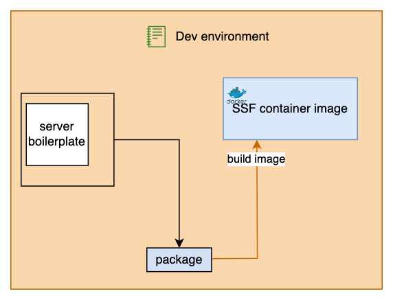

Advanced
Create a test interface for your application
You can define a series of tests for your application.
Such tests will be run when issuing the command test.
The logic is similar to the application interface - you need to define a test client.
This is a handler for a Python requests session.
When running gc-ssf test an instance of your server will run
and a test client will issue the standard SSF tests as well as your custom tests.
For example:
In the same Python file where you defined the SSFApplicationInterface, define a child class of SSFApplicationTestInterface and implement the required methods:
from ssf.application import SSFApplicationTestInterface
logger = logging.getLogger()
class MyTestClient(SSFApplicationTestInterface):
def begin(self, session, ipaddr: str) -> int:
"""
Begin application testing.
session: The Python requests library session (credentials are initialised before calling into application tests).
ipaddr (str): IP address including port (e.g. "http://0.0.0.0:8100")
Returns:
0 if successful.
"""
logger.info("MyApp test begin")
return 0
def subtest(self, session, ipaddr: str, index: int) -> Tuple[bool, str, bool]:
"""
Issue test.
Parameters:
session: The Python requests library session (credentials are initialised before calling into application tests).
ipaddr (str): IP address including port (e.g. "http://0.0.0.0:8100")
index (int): Subtest index, starting at zero after 'begin' and incrementing with each call to subtest.
Returns:
tuple ((bool, str, bool)):
True if test passed,
A human-readable description of the result (for logging),
True to continue running tests.
"""
max_iter = 9
test_inputs = [1,2,3,4,5,6,7,8,9,10]
logger.debug(
f"MyApp test index={index} out of {max_iter}"
)
test_input = test_inputs[index]
url = f"{ipaddr}/tested_endpoint/"
params = {"x": f"{test_input}"}
response = session.post(url, params=params, headers={"accept": "application/json"}, timeout=5
)
def eval_result(response):
if response.status_code == 200:
return (True, "Test passed")
else
return (False, "Test failed")
status, message = eval_result(response)
if index >= max_iter:
# stop testing
return (status, message, False)
else:
# continue testing
return (status, message, True)
def end(self, session, ipaddr: str) -> int:
"""
End application testing.
session: The Python requests library session (credentials are initialised before calling into application tests).
ipaddr (str): IP address including port (e.g. "http://0.0.0.0:8100")
Returns:
0 if successful.
"""
logger.info("MyApp test ends")
return 0
def create_ssf_application_test_instance(ssf_config: SSFConfig) -> SSFApplicationTestInterface:
logger.info("Create a test instance")
return MyTestClient()
The method subtest will run in a loop as long as the last value of the output tuple is True. For each iteration, the input index is incremented.
Additional checks can be written in the begin and end methods.
Note that you also need to define the builder create_ssf_application_test_instance to enable SSF to get the instance.
SSFConfig object passed to the test instance factory captures as a copy both the current ssf config and run-time arguments in a single structure and is provided as additional context for the test.
Check the available IPUs
SSF provides a few utilities that you can use when implementing SSFApplicationInterface,
You can use get_ipu_count to check how many IPUs are available on the system where your application is executed.
Building an SSF image
SSF can self package:
The diagram below shows what happens when this command is run:
The resulting SSF image can be run as an interactive Bash session:
Or it can be used to start an application dynamically by passing options with the SSF_OPTIONS environment variable. The following example shows how the SSF container might be used for rapid deployment of an application:
gc-docker -- --rm -d --env SSF_OPTIONS='--config git@github.com:graphcore/simple-server-framework.git|examples/simple/ssf_config.yaml init build run' graphcore/simple-server-framework:latest
Building the wheel from sources
Build the wheel:
Installing the built wheel
Then install the wheel:
Running the CLI from Python
You can run the SSF CLI from Python. For example: